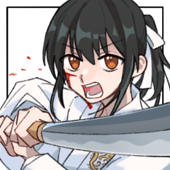
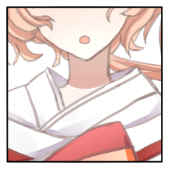
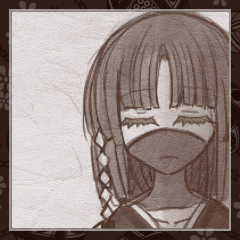

クライマックスフェイズ
GM
丸い月が、結界の内に据えられた舞台を見下ろしている。
晴嵐路 花楽
高く昇った秋月、跳梁跋扈する妖魔たちの影を照らすは満ちた月の光。
”成人の儀”が”成る”今日この日、この時のために、自分は生きてきたと言っても過言ではありません。
晴嵐路 花楽
晴嵐路の価値観は古く、子供は『大人』になるまで神の領分の生き物、神の持ち物とされる。
そのため、大人として、人間として認められるその日まで、仮面を外すことはありません。
けれども、花楽は知っています。
自分が、この仮面を外すことなく、神としてこの世を去ることを。
晴嵐路 花楽
「もっとも強く、最後まで立ち続けた者にだけ、全てを選ぶことが許される場所」
晴嵐路 花楽
神は、人の世に現れない。
神は、人の子に顔を見せない。
神は、人の手の届く場所にはどこにも存在しない。
晴嵐路 花楽
「我が名は神……人の世に忍ぶ神。
世を忍び、影に忍び、仮面に忍び、忍ぶ神ぞここりにありにけり。
我が名は……………………シノビガミ」
晴嵐路 花楽
ひとたび足を踏み出せば、風が踊りだし。
ひとたび扇子がひらり舞えば、人ならざる神の領分へ。
季節外れの花が、秋風に乗ってただ舞い散る。
天立 羽琉
――これまでの日々が、ずっと続くと思っていた。
時に遊び、時に追い縋りながら。
僕は数え切れないほどの勝負を花楽に挑み続けて。
天立 羽琉
きっと、いつの日にか……
そんなことを思いながら、多くの月日が流れて行った。
……だけれど。
ついぞ、僕の手は花楽に届いたことは無く……
天立 羽琉
望むと、望まざるとに関わらず。
ここに居る僕らの誰かとは、もう二度とは会えなくなるかも知れない。
天立 羽琉
天立家の一子としての務め。
幼い頃から僕を世話してくれた乞姉さんへの感謝。
幾度も僕を気遣ってくれた古縁塚さんへの尊敬。
天立 羽琉
そして、僕の大切な幼馴染。
君とは本当に多くの時間を過ごして、互いに沢山の話をして来たけれど。
それでも――君には、まだ伝えなければならないことがあるんだ。
天立 羽琉
「…ね、花楽。
今日この日が来るまで…僕らは色んなゲームをしたり、競争をしたり……
ありとあらゆる勝負の方法を、試して来たけれど――
やっぱり、さ。
最後に、僕たちの勝負を決するとしたら……
相応しい方法は、たった一つしか無いと思うんだ。」
天立 羽琉
――照らされる月明かりの下、
舞い散る花びらを掻き分けて、人の子が姿を現す。
天立 羽琉
「今一度、手合わせをしよう。
僕たちの力と技を精一杯に振るって、本当の決着を付けよう。
僕は君を、シノビガミになんてさせたりはしない――」
天立 羽琉
「――あの日、見せることの出来なかった僕の剣で！
必ず君を、この世界に留めて見せる！」
天立羽琉は、これより儀式に臨む。
隠岐 乞
風のない宵の縁。
静謐に幕は上がる。
この日を以って世界は変わる。
きっと、どちらへ転がっても良い方へ。
隠岐 乞
それを人は知らない。
影に忍び気づかない。
知っているのはこの場限り。
見守る者だけ。
隠岐 乞
「天立羽琉。いい宣言だ。
天頂の花を摘むことできるか、見届けさせてもらう」
古縁塚 命
子供たちが舞台に上がるのを見守って。
それを見守る大人を一人、見送って。
古縁塚 命
…そうして、月夜に蝶が一枚、二枚羽ばたいて。
古縁塚 命
本当はこのような儀式をさせたくなどはなかった。
古縁塚 命
自らだけでコトを済ませられれば、どれだけ良いかと思っていた。
古縁塚 命
蝶は舞う。花びらと戯れるように。
花びらに翻弄をされるように。
古縁塚 命
けれど、そうは出来なかった。
”自分には力が欠けているから”。
”自分には至りきることが出来なかったから”。
古縁塚 命
二十で”真なる神”には至れなかった男。
古縁塚 命
「…今更何を言っても、変えられない事実がある。避けられない戦いがある」
古縁塚 命
「…だからこそ、その”戦い”をもってして僕は僕の務めを果たそう」
古縁塚 命
「それが僕の、”本来行うべき立場だった”シノビガミの役割だ」
GM
クライマックスフェイズには命の従者『草』が参戦します。
GM
また、クライマックスフェイズは6Rで終了します。
ラウンド1
天立 羽琉
影法師を使用します。
対象は花楽ちゃん。
天立 羽琉
2D6>=5 （判定：歩法） (2D6>=5) ＞ 8[2,6] ＞ 8 ＞ 成功
GM
成功。羽琉のプロットは花楽と同プロットになります。
隠岐 乞
2D6>=5 （判定：掘削術） (2D6>=5) ＞ 10[4,6] ＞ 10 ＞ 成功
古縁塚 命
プロット、決定しました。
（配下もまとめて宣言します）
[ 古縁塚 命 ] がダイスシンボルを公開。出目は 4 です。
[ 隠岐 乞 ] がダイスシンボルを公開。出目は 4 です。
[ 晴嵐路 花楽 ] がダイスシンボルを公開。出目は 3 です。
[ 隠岐 乞 ] がダイスシンボルを公開。出目は 5 です。
[ 古縁塚 命 ] がダイスシンボルを公開。出目は 1 です。
GM
プロット4：乞、草
プロット3：花楽、羽琉
プロット1：命
天立 羽琉
「行くぞ花楽！
僕はもう、君から目を離したりはしない！」
力強く地を蹴って、花楽の後をピタリと追い縋る。
隠岐 乞
どす、と大きな音がして地盤が捻じ曲がる。そこに人はなかった。
「およ～？ 当たらなかったかあ」
GM
同時行動では、プロットの最後に生命点の喪失などの処理をまとめて行います。
が、便宜上どちらが先に行動するかはダイスで決定します。
GM
乞と灯蝶は2d6を振ってください。数字の大きい方が後手で行動します。
隠岐 乞
2d6 (2D6) ＞
6[2,4] ＞ 6
草『灯蝶』
2d6 (2D6) ＞
5[2,3] ＞ 5
草『灯蝶』
乞ちゃんに接近戦攻撃を行います。指定特技は潜伏術。
草『灯蝶』
2D6>=5 （判定：潜伏術） (2D6>=5) ＞ 9[4,5] ＞ 9 ＞ 成功
隠岐 乞
2D6>=6 （判定：遁走術） (2D6>=6) ＞ 10[4,6] ＞ 10 ＞ 成功
隠岐 乞
2D6>=5 （判定：掘削術） (2D6>=5) ＞ 9[3,6] ＞ 9 ＞ 成功
[ 隠岐 乞 ] 忍具 : 6 → 4
天立 羽琉
回避します～
かなり痛そうなので感情修正欲しいかも…
天立 羽琉
2D6+1>=7 （判定：刀術） (2D6+1>=7) ＞ 8[2,6]+1 ＞ 9 ＞ 成功
草『灯蝶』
月夜に焔の蝶が舞う。
きらきらと火の粉を撒き散らしながら。
草『灯蝶』
舞い飛ぶ炎は触れた者の身を焦がし。
その光は目にした者の目測を惑わす。
隠岐 乞
きらきら。夜に舞う光の蝶がわたしは好きだった。
素直に乞れたあの頃は見せてほしいと何度も何度もお願いしたものだ。
隠岐 乞
焔の鱗粉を水壁が閉ざす。
おなじことがしたいと乞っても足掻いても私にはできなかった。
人には人の天分がある。
隠岐 乞
"こども"の地盤、土塊が盛り上がる。
飛び上がる影。
隠岐 乞
「うりゅう～？ 背中を追いかけているばかりじゃあ捕まえられないぞっ！」
クナイを両手に構えた乞ちゃん登場ですっ！
天立 羽琉
「うっ……！
乞姉さんなら早速攻めて来ると思っていたけれど……」
変わらず、目前の花楽からは目を逸らさずに。
身体のみを捻って、迫るクナイを避ける。
天立 羽琉
「…少しだけ、狙いが甘かったね。
いつもより集中が足りていないんじゃない？」
ひらり避けるや、再び正面に刀を構えた。
隠岐 乞
「おっ、言うようになったねえ？
おねーちゃんとの特訓の成果が出ててえらいえらい」
楽しげに声をあげて。
体を屈め、脚力で退く。彼女へ場を譲るために。
隠岐 乞
その直前に。
とん、と少女の腰を叩いた。
"あなたの居場所はここだ" と伝えるように。
晴嵐路 花楽
2d6 (2D6) ＞
8[3,5] ＞ 8
天立 羽琉
2d6 (2D6) ＞
4[1,3] ＞ 4
天立 羽琉
では、撫斬を使用して花楽ちゃんを攻撃します。判定は刀術で。
天立 羽琉
2D6>=5 （判定：刀術） (2D6>=5) ＞ 9[3,6] ＞ 9 ＞ 成功
晴嵐路 花楽
感情修正を乞お姉様から頂きたいです。
晴嵐路 花楽
2D6+1>=7 （判定：分身の術） (2D6+1>=7) ＞ 8[4,4]+1 ＞ 9 ＞ 成功
GM
こちらもRPはあとでまとめてやりましょうか。
晴嵐路 花楽
奥義を使用します。
また、花楽は忍法『秘中の秘』・『揺音』の効果により、奥義情報を得るには『封術』による見切り判定に成功しなければなりません。この判定には-2の修正が入ります。
晴嵐路 花楽
■奥義
《花に嵐》
指定特技 ：壊器術
エフェクト：範囲攻撃/くらまし/人数限定
効果・演出：一度扇子を手に舞えば、吹けよ風、呼べよ嵐。荒れ狂う風の中、飛び交う花びらが無数の刃となって襲いかかる。
花に嵐の例えもあるわ。さよならだけが人生ね。
GM
では、見切り判定をしたい方は封術に-2をつけてどうぞ。
晴嵐路 花楽
人数限定なので、対象は、羽流くんと命さんでお願いします。
天立 羽琉
2D6-2>=7 （判定：意気） (2D6-2>=7) ＞ 4[1,3]-2 ＞ 2 ＞ 失敗
古縁塚 命
2D6-2+1>=7 （判定：意気） (2D6-2+1>=7) ＞ 9[4,5]-2+1 ＞ 8 ＞ 成功
GM
それはそれとして、ここで奥義によるダメージが発生します。
GM
羽琉と命に2点ずつ。分野は受ける側の任意です。
[ 古縁塚 命 ] 頑健 : 2 → 0
[ 天立 羽琉 ] 頑健 : 2 → 0
天立 羽琉
「…こうして、気を落ち着けて観察するとよく分かる。
花楽に害意が迫る度、その周囲が歪んで、何かが花楽を護っている。
まずはあれを何とかしないと……」
真っ直ぐに花楽を見据えながら、じりじりと間合いを詰めて。
天立 羽琉
「やぁッ！」
舞う花びらに互いの視界が遮られた間隙を狙い、
鋭く突き入れた剣は――そのまま空を切った。
晴嵐路 花楽
空を切る斬撃の風に、ふわり、髪を舞わせ。
晴嵐路 花楽
「……男子、三日会わざれば刮目して見よ、とは言いますが」
踊る、踊る、踊る。
足取りも軽く、まるで舞い遊ぶかのように。
「ほんの数日で見違えるようになられましたね、羽流さま」
晴嵐路 花楽
花びらが、舞う。
羽流へ、命へ。
吹けよ風、呼べよ嵐。
斬りつけるように鋭く、速く。
晴嵐路 花楽
「……わたくしも、貴方さまも。ついぞ、お酒を酌み交わす間柄には至りませんでしたが」
児戯。
しょせんこれもまた、神にとっては、暇つぶしにすぎないのですから。
天立 羽琉
「――来る！」
それは、さながら生きる風の奔流。
舞う花びらが目に見えて迫ると分かれど、
その密度は避けるに能うものではなく。
天立 羽琉
「ぐっ……！」
咄嗟に身を小さくしたことで、身体に傷は付かず済めども。
真新しい道着は、今や見るも襤褸へと変わり。
次に迫る攻撃に耐えることは、もはや敵わないだろう。
古縁塚 命
吹き荒れる嵐のような花びらに、舞台上を舞っていた蝶は次々と散り消えて。
古縁塚 命
「……」
頬に掠めるそれを避けながら、その”光景”をじっと見ていた。
古縁塚 命
揺らし惑わす技巧も。
秘め隠す隠匿も見通す眼。
…それで、彼女が放った奥義の癖を見つけた。
古縁塚 命
蝶が一つ、羽琉へと飛ぶ。
それが耳元で羽ばたけば、命が気づいた事実もまた彼の元へ。
古縁塚 命
先程のをRPとして…今回はパスで大丈夫です
ラウンド2
隠岐 乞
2D6>=5 （判定：掘削術） (2D6>=5) ＞ 5[1,4] ＞ 5 ＞ 成功
天立 羽琉
2D6>=5 （判定：歩法） (2D6>=5) ＞ 9[3,6] ＞ 9 ＞ 成功
GM
こちらも成功。羽琉のプロットは花楽と同じになります。
[ 晴嵐路 花楽 ] がダイスシンボルを公開。出目は 3 です。
[ 草『灯蝶』 ] がダイスシンボルを公開。出目は 5 です。
[ 隠岐 乞 ] がダイスシンボルを公開。出目は 5 です。
[ 隠岐 乞 ] がダイスシンボルを公開。出目は 4 です。
[ 古縁塚 命 ] がダイスシンボルを公開。出目は 2 です。
GM
プロット5：乞、灯蝶
プロット3：花楽、羽琉
プロット2：命
天立 羽琉
「まだまだ、これからだ花楽！
君がどこへ行こうと、僕は君から離れない！」
先の一撃を受けても緩まず怯まず、傍を付いて地を駆ける。
隠岐 乞
びしゃり。ばしゃ。
ひとりでにえぐれた地は水を噴く。
泥濘みはだれひとり絡め取ることなく広がっていく。
隠岐 乞
2d6 (2D6) ＞
9[4,5] ＞ 9
草『灯蝶』
2D6 (2D6) ＞
10[4,6] ＞ 10
隠岐 乞
2D6>=5 （判定：掘削術） (2D6>=5) ＞ 4[1,3] ＞ 4 ＞ 失敗
GM
RPはプロット終了時にお願いしましょう。続いて灯蝶の行動をどうぞ。
草『灯蝶』
接近戦攻撃（潜伏術）で隠岐乞を攻撃します。
草『灯蝶』
2D6>=5 （判定：潜伏術） (2D6>=5) ＞ 11[5,6] ＞ 11 ＞ 成功
隠岐 乞
2D6>=6 （判定：遁走術） (2D6>=6) ＞ 2[1,1] ＞ 2 ＞ ファンブル
GM
1点の接近戦ダメージ。灯蝶はRCTを振ってください。
草『灯蝶』
RCT ランダム分野表(1) ＞
器術
[ 隠岐 乞 ] 器術 : 1 → 0
草『灯蝶』
花びらの嵐に撒かれようと。
水術の檻に消し去られようと。
草『灯蝶』
月光を受けて焔の蝶は飛ぶ。
燐光を帯びた粒子を溢しながら舞台をひらり舞い踊って。
草『灯蝶』
不意に、一枚の蝶が乞の眼の前で動きを変える。
古縁塚 命
『しょうがないなぁ…。危ないから、ちょっとだけだよ？』
草『灯蝶』
ねだられて。そう、困ったように笑いながら。
それでも見せてくれたいつかの舞い。
草『灯蝶』
かつてと同じように七色に炎色を変化させながら、くるりと舞うように踊ったその蝶は。
草『灯蝶』
その思い出に潜み込むようにして、貴女の忍具に小さな煤をつけた。
隠岐 乞
『おにいちゃんのちょうちょ、おひさまみたい。ずっと見ていたくなるの』
ねだって。目を輝かせて見入ったあなたの舞。
隠岐 乞
あなたのいないところでひとり真似をしたこと、あなた知らないでしょう。
隠岐 乞
あなたの教えてくれたことを倣いたかった。
あなたのようになりたかった。
背中を見つめるだけじゃなくって──。
隠岐 乞
「あっ！ こらこら入り込むんじゃありません！」
隠岐 乞
続く空振り。
だれも足を踏み入れない泥濘みは変わらぬ姿で鎮座する。
無謀な願いを戒めるように。
手も足も捕らえられないことが焦りとなったのか、蝶はたやすく懐に入り込んだ。
隠岐 乞
いつもそうだ。
一手二手、先を取られて、追いつけない。
隠岐 乞
焼け焦げた夕日のように忍具は黒ずみ、乞は舌打ちした。
晴嵐路 花楽
2d6 (2D6) ＞
9[3,6] ＞ 9
天立 羽琉
2d6 (2D6) ＞
12[6,6] ＞ 12
晴嵐路 花楽
背景から”切り札”を発動、奥義の指定特技を「伝達術」に移動します。
その上で奥義・範囲攻撃を羽流・命を対象に。
GM
はい。奥義破りにはくらましで-2がつきます。
草『灯蝶』
2D6-2>=10 （判定：見敵術） (2D6-2>=10) ＞ 9[4,5]-2 ＞ 7 ＞ 失敗
GM
とりあえず羽琉くんは-2+1をつけてどうぞ！
天立 羽琉
はい、では経済術で判定します。合計で-1ですね。
天立 羽琉
2D6-1>=8 （判定：経済力） (2D6-1>=8) ＞ 8[2,6]-1 ＞ 7 ＞ 失敗
古縁塚 命
2D6-2+1>=9 （判定：瞳術） (2D6-2+1>=9) ＞ 7[2,5]-2+1 ＞ 6 ＞ 失敗
GM
どちらも失敗。羽琉と命に2点のダメージですね。
GM
分野は受ける側の任意です。どこを潰しますか？
[ 天立 羽琉 ] 器術 : 1 → 0
[ 天立 羽琉 ] 忍術 : 1 → 0
[ 古縁塚 命 ] 器術 : 1 → 0
[ 古縁塚 命 ] 謀術 : 1 → 0
天立 羽琉
2D6>=5 （判定：刀術） (2D6>=5) ＞ 4[2,2] ＞ 4 ＞ 失敗
[ 天立 羽琉 ] 忍具 : 2 → 1
[ 天立 羽琉 ] 忍具 : 1 → 2
天立 羽琉
2D6>=5 （判定：刀術） (2D6>=5) ＞ 9[3,6] ＞ 9 ＞ 成功
[ 天立 羽琉 ] 忍具 : 2 → 3
[ 天立 羽琉 ] 忍具 : 3 → 3
[ 天立 羽琉 ] 忍具 : 3 → 2
晴嵐路 花楽
2D6+1>=7 （判定：分身の術） (2D6+1>=7) ＞ 9[3,6]+1 ＞ 10 ＞ 成功
晴嵐路 花楽
ひらり。
風の流れが、変わる。
扇子のひらめきが、足の運びが、身のこなしが。
遊び方は一つじゃない。
晴嵐路 花楽
”舞い方”を変える。
こちらをじっと伺う、命の視線をわざと覗き込むように、目を合わせ笑うように。
晴嵐路 花楽
「あのときのように、ね？」
息も止まるほど、心通わせて見せて？
心と心、伝わるように。
天立 羽琉
「ぐっ……」
舞う花びらが、全身を刻むように流れて行く。
痛みに顔を歪めても、目は逸らさない。
たとえ君が、僕から目を離していても。
天立 羽琉
「やぁっ！」
血潮に透ける視界の向こうに、刀を突き入れる。
避けられども、躱されども。
ただ愚直に、真っ直ぐに。
刀を突き入れ、振るって行く。
天立 羽琉
かつて花楽に教えられたように…多くを一度に考えることは苦手だから。
今この時、最も得意で、効果を見込める一撃を繰り出して行く。
天立 羽琉
君は、いつだって驕りも無く。
どんな時だって高慢な態度すら見せず。
まるでそれが楽しいかのように、何一つすら惜しまずに教えてくれた。
僕がもっと強く、君に近付いて来ることを望むかのように。
古縁塚 命
白炎（ビャクエン）
指定特技：火術
クリティカルヒット/滅び/威力低下
古縁塚 命
神炎を自らの肉体へと降ろし、万物を燃やし尽くす奥義。
それはシノビも。妖魔も。
──そして神も例外ではない。
GM
では、花楽に頑健2点分と、1点のランダムダメージ。
古縁塚 命
RCT ランダム分野表(3) ＞
忍術
隠岐 乞
■奥義
《土人形の水遊び》
指定特技 ：経済術
エフェクト：絶対防御/くらまし/防御低下
効果・演出：そうあれと望めば泥濘んだ土は壁となりすべてを阻む。瞬きするわずかな時間、その間に。この時に咲き誇れ、あたしの花。
GM
防御低下により3点軽減され、命のクリティカルヒットのダメージは無効化されます。
隠岐 乞
ひとの焔を阻むは水と土混ざりの壁。
あなたのようになりたくてなれなかった、私の水と泥。
隠岐 乞
「昔にさ、命さん、って呼んだこと覚えてる？
すこし背伸びしてみたかったんだ」
焔の打ち付ける寸前、時が止まる。
視線で縫い留める。
わがままに付き合ってくれているだけじゃないと、そう思いたいの。
隠岐 乞
「なぞなぞ。あーしの譲れないものってなんでしょう？」
隠岐 乞
時は動き出す。焔が泥壁を焦がす音。
わずかな時間。それさえあれば彼女は逃れた。
古縁塚 命
「…それに答えてしまったら…戦いにくくなっちゃうなぁ」
古縁塚 命
果たして。
その目論見は思い通りのこととなる。
古縁塚 命
─僅か一瞬。
泥濘の壁よりも、その質問が何よりもの壁となって神炎は神に届くこともなく阻まれた。
古縁塚 命
「……勿論。覚えているよ」
1つ目の質問にだけ、そう答えて。
命は今一度距離を取る。
ラウンド3
隠岐 乞
忍具 兵糧丸を使用します。
その後に奈落を使用します。
天立 羽琉
2D6>=5 （判定：歩法） (2D6>=5) ＞ 4[1,3] ＞ 4 ＞ 失敗
[ 隠岐 乞 ] 忍具 : 4 → 4
[ 隠岐 乞 ] 器術 : 0 → 1
[ 隠岐 乞 ] 忍具 : 4 → 3
隠岐 乞
2D6>=5 （判定：掘削術） (2D6>=5) ＞ 5[2,3] ＞ 5 ＞ 成功
[ 晴嵐路 花楽 ] がダイスシンボルを公開。出目は 6 です。
[ 天立 羽琉 ] がダイスシンボルを公開。出目は 1 です。
[ 古縁塚 命 ] がダイスシンボルを公開。出目は 5 です。
[ 草『灯蝶』 ] がダイスシンボルを公開。出目は 1 です。
[ 隠岐 乞 ] がダイスシンボルを公開。出目は 3 です。
[ 隠岐 乞 ] がダイスシンボルを公開。出目は 4 です。
隠岐 乞
RPスキップ！！！（心の目で見てください。増える泥濘を）
GM
【プロット6】花楽
【プロット5】命
【プロット3】乞
【プロット1】羽琉、灯蝶
天立 羽琉
「うっ……？」
自らの血潮に眼を遮られた瞬間、花楽が視界から消えた。
ずっと付いて行くと、誓ったばかりなのに。
彼女は遥か速度を増して遠くにいる。
晴嵐路 花楽
奥義・範囲攻撃を使用します。対象は命のみ。RPはなしで。
草『灯蝶』
2D6-2>=10 （判定：見敵術） (2D6-2>=10) ＞ 5[1,4]-2 ＞ 3 ＞ 失敗
古縁塚 命
2D6-2>=9 （判定：瞳術） (2D6-2>=9) ＞ 8[3,5]-2 ＞ 6 ＞ 失敗
古縁塚 命
乞ちゃんが破りをするなら切り札を使おうかな
古縁塚 命
では、切り札で指定特技を瞳術に変更をするよ
晴嵐路 花楽
命さんのクリヒに奥義破りを仕掛けます、博識で+2修正。乞ちゃんから感情修正をもらいたいです。
晴嵐路 花楽
2D6+3>=9 （判定：伝達術） (2D6+3>=9) ＞ 5[1,4]+3 ＞ 8 ＞ 失敗
隠岐 乞
命さんのクリヒに奥義破りを仕掛けます。感情修正+1もらいました。
隠岐 乞
2D6+1>=8 （判定：封術） (2D6+1>=8) ＞ 6[1,5]+1 ＞ 7 ＞ 失敗
GM
命の滅びによって、花楽の範囲攻撃が無効化されました。
古縁塚 命
晴嵐路花楽に奥義を使用するよ
※使えなかったので取り消し
古縁塚 命
2D6>=5 （判定：香術） (2D6>=5) ＞ 5[2,3] ＞ 5 ＞ 成功
[ 古縁塚 命 ] 忍具 : 2 → 1
古縁塚 命
2D6>=5 （判定：香術） (2D6>=5) ＞ 9[3,6] ＞ 9 ＞ 成功
隠岐 乞
2D6>=7 （判定：飛術） (2D6>=7) ＞ 12[6,6] ＞ 12 ＞ スペシャル(【生命力】1点か変調一つを回復)
[ 隠岐 乞 ] 器術 : 0 → 1
古縁塚 命
それは眠りをもたらす鱗粉を纏い乞の元へ。
隠岐 乞
なにもできない人間だったのでロール回したら次に進めます。
隠岐 乞
むかしむかし。早くおとなになりたかった。
進めば追いつけると信じて。
一歩、二歩、三歩。着実に。
四歩、 、六歩。時に大股で。
隠岐 乞
あーしの歩みだけあなたも進んでると思いもしなかったの。
愚直に、真っ直ぐに。目を離されても。視界の外置かれても。
隠岐 乞
瞳の真ん前に立てると信じていた。
いつか必ず叶うと信じ続ければ──。
隠岐 乞
泥濘は神に至らぬ蝶を地へはたき落とした。
天立 羽琉
2d6 (2D6) ＞
9[4,5] ＞ 9
草『灯蝶』
2d6 (2D6) ＞
8[4,4] ＞ 8
草『灯蝶』
ひらり。ひらり。
吹き荒れる花びらから守るようにして羽琉の周りを蝶が飛ぶ。
ラウンド4
天立 羽琉
2D6>=5 （判定：歩法） (2D6>=5) ＞ 3[1,2] ＞ 3 ＞ 失敗
忍じん
2D6>=5 （判定：掘削術） (2D6>=5) ＞ 9[4,5] ＞ 9 ＞ 成功
[ 古縁塚 命 ] がダイスシンボルを公開。出目は 2 です。
[ 晴嵐路 花楽 ] がダイスシンボルを公開。出目は 6 です。
[ 草『灯蝶』 ] がダイスシンボルを公開。出目は 5 です。
[ 隠岐 乞 ] がダイスシンボルを公開。出目は 4 です。
[ 隠岐 乞 ] がダイスシンボルを公開。出目は 5 です。
[ 天立 羽琉 ] がダイスシンボルを公開。出目は 1 です。
GM
【プロット6】花楽
【プロット5】灯蝶
【プロット4】乞
【プロット2】命
【プロット1】羽琉
天立 羽琉
脚が縺れる、呼吸が乱れる……
追い掛ける背中は遠く、未だ追い付けず……
草『灯蝶』
2D6>=14 （判定：見敵術） (2D6>=14) ＞ 9[4,5] ＞ 9 ＞ 失敗
GM
とりあえず命中判定が先なので、お願いします！
隠岐 乞
2D6>=5 （判定：掘削術） (2D6>=5) ＞ 4[2,2] ＞ 4 ＞ 失敗
ラウンド5
天立 羽琉
2D6>=5 （判定：歩法） (2D6>=5) ＞ 9[3,6] ＞ 9 ＞ 成功
隠岐 乞
2D6>=5 （判定：掘削術） (2D6>=5) ＞ 9[4,5] ＞ 9 ＞ 成功
[ 晴嵐路 花楽 ] がダイスシンボルを公開。出目は 2 です。
[ 古縁塚 命 ] がダイスシンボルを公開。出目は 3 です。
[ 草『灯蝶』 ] がダイスシンボルを公開。出目は 2 です。
[ 隠岐 乞 ] がダイスシンボルを公開。出目は 5 です。
[ 隠岐 乞 ] がダイスシンボルを公開。出目は 4 です。
GM
【プロット4】乞
【プロット3】命
【プロット2】灯蝶、羽琉、花楽
天立 羽琉
「ここまで切り結び続けて……
僕も古縁塚さんも満身創痍だと言うのに。
いまだ花楽は、傷の一つも負ってない。」
天立 羽琉
「…僕はまだ……
花楽を、僕一人の力で倒し切ることに拘り過ぎているのかも知れない。
古縁塚さんと力を合わせるんだ……！」
隠岐 乞
水を含んだ土は静かに領土を広げる。
乞の靴もまた跳ねた泥に汚れていた。
隠岐 乞
2D6>=5 （判定：掘削術） (2D6>=5) ＞ 3[1,2] ＞ 3 ＞ 失敗
隠岐 乞
不意にこの刻の終わりが過ぎった。
自身の泥に絡みつかれた脚は意志に反してぴくりと動かなかった。
古縁塚 命
晴嵐路花楽に奥義を使用します
クリティカルヒット/滅び/威力低下
指定特技：瞳術
晴嵐路 花楽
奥義破りを仕掛けます、博識を使用、感情修正をもらえると助かります。
晴嵐路 花楽
2D6+3>=9 （判定：伝達術） (2D6+3>=9) ＞ 5[2,3]+3 ＞ 8 ＞ 失敗
天立 羽琉
奥義破りします 感情修正を貰いたいです
天立 羽琉
2D6+3>=5 （判定：経済力） (2D6+3>=5) ＞ 7[2,5]+3 ＞ 10 ＞ 成功
GM
頑健に2点と、ランダムダメージが1点。命はRCTをお願いします。
古縁塚 命
RCT ランダム分野表(2) ＞
体術
[ 晴嵐路 花楽 ] 頑健 : 2 → 0
[ 晴嵐路 花楽 ] 体術 : 1 → 0
古縁塚 命
「なんだい」
そう、いつもと変わらない声で笑って。
古縁塚 命
貴女を見ているまま、蝶は花楽の元へと飛ぶ。
古縁塚 命
蝶は花びらの嵐をひらり躱して、神の子の身を焦がす。
晴嵐路 花楽
失血。
血が流れる。
人間なら当たり前のはずのことなのに。
晴嵐路 花楽
「……わたくしにも、流れているのですね」
不思議と、笑ってしまった。

天立 羽琉
「……そこだ！」
神速の刃が、蝶を阻もうとする土壁を突き崩す。
剣先を捻り、土塊に込められた仕掛けを削ぎ落した。
古縁塚 命
共に戦っている。
同じ想いを持つ者が居る。
天立 羽琉
「…邪魔はさせないよ、乞姉さん。」
油断なく息を吐きながら、よどみなく構えを整えて。
「これで…花楽に、刃が届く！」
GM
同時行動ですね。羽琉、花楽、灯蝶は2d6をどうぞ。
草『灯蝶』
2d6 (2D6) ＞
5[1,4] ＞ 5
晴嵐路 花楽
2d6 (2D6) ＞
4[2,2] ＞ 4
天立 羽琉
2d6 (2D6) ＞
9[3,6] ＞ 9
晴嵐路 花楽
奥義を使用します。
範囲攻撃/くらまし/人数限定、指定特技は伝達術です。
天立 羽琉
判定は経済術。感情は既に貰ったのでなしで。
天立 羽琉
2D6-2>=8 （判定：経済力） (2D6-2>=8) ＞ 10[5,5]-2 ＞ 8 ＞ 成功
晴嵐路 花楽
舞踊る、徐々に終幕に向けて、優雅にも確実に。
けれども、一瞬。
足が、止まる。
視線が、かち合う。
晴嵐路 花楽
ほんの一瞬。
心が盗まれるような僅かな間。
天立 羽琉
舞う花びらが頬を掠めても、
決して顔を逸らすことはせず。
天立 羽琉
向き合う視線に引かれるように、足を前へ。
するりと、花びらの嵐をくぐり抜けた。
草『灯蝶』
晴嵐路花楽に接近戦攻撃（潜伏術）を行います
草『灯蝶』
2D6>=5 （判定：潜伏術） (2D6>=5) ＞ 8[4,4] ＞ 8 ＞ 成功
晴嵐路 花楽
2D6>=5 （判定：潜伏術） (2D6>=5) ＞ 9[4,5] ＞ 9 ＞ 成功
天立 羽琉
■奥義
《冒刃の天断ち》
指定特技 ：意気
エフェクト：クリティカルヒット/断ち/射程低下
効果・演出：捨て身の踏み込みから放たれる必殺の斬り上げ。
GM
初回だから奥義破りはできませんね。ランダム5点ダメージ。
天立 羽琉
花楽ちゃんの残り生命力5ですが振る意味ある感じです？
天立 羽琉
RCT ランダム分野表(1) ＞
器術
天立 羽琉
RCT ランダム分野表(5) ＞
戦術
天立 羽琉
RCT ランダム分野表(3) ＞
忍術
天立 羽琉
RCT ランダム分野表(4) ＞
謀術
天立 羽琉
RCT ランダム分野表(6) ＞
妖術
隠岐 乞
今のタイミングで乞の兵糧丸を使用してもいいですか？
天立 羽琉
では回想シーン使います ダメージをプラスで
[ 晴嵐路 花楽 ] 体術 : 0 → 1
[ 晴嵐路 花楽 ] 器術 : 1 → 0
[ 晴嵐路 花楽 ] 忍術 : 1 → 0
[ 晴嵐路 花楽 ] 謀術 : 1 → 0
[ 晴嵐路 花楽 ] 戦術 : 1 → 0
[ 晴嵐路 花楽 ] 妖術 : 1 → 0
[ 晴嵐路 花楽 ] 忍術 : 1 → 0
[ 晴嵐路 花楽 ] 忍具 : 2 → 1
GM
様々なことがあり、1点が残ります。RPをどうぞ！
天立 羽琉
かつての遠き日に、天立家の開祖となる者が、
暴風雨に隠れ潜む魔を雨雲ごと切り裂き、天を断ち割ったとされる大振りの斬り上げ。
天立 羽琉
しかしてその実態は……
大振りの剣技であるが故に、幾重にも重ねた牽制と呼吸の読み、
そして何よりも、天より滴る雨粒一つをも両断する繊細な刀運びを要とする奥義。
天立 羽琉
およそ所作を真似た付け焼刃のみで再現できるものではなく、
未熟の身では刃を振り上げることも叶わず、ただ大きく隙を晒すのみ。
天立 羽琉
――刀身を揺らめながら、刃を花楽に向ける。
その煌めく切っ先を畏れ、警戒を発するように。
天立 羽琉
刹那、身を低くして視界の外へ隠れながら、
己を身を諸共に、倒れ込まんばかりの勢いで体躯を押し当てる。
花弁と共に舞い踊る身体を、決して遠く逃がさぬように。
天立 羽琉
己の身に余る高度な駆け引きを、捨て身の踏み込みで代えて。
その刃を届かせるために――
天立 羽琉
あの日…僕を見下ろす君の顔を、ずっと思って来た。
天立 羽琉
僕にとっては、深い畏れの記憶ではあるけれど……
けれども、それは決して屈辱と呼ぶようなものではなくて。
天立 羽琉
君の期待に、何も応えられずに終わったことが――ただ悲しかったんだ。
天立 羽琉
「僕は今度こそ、この剣を君に届かせて見せる！」
天立 羽琉
彼我の身体がぶつかる衝撃の中、
握りを変えた刀の切っ先が大地に向けられた。
天立 羽琉
全身全霊。
握り締めた刀が、咆哮と共に鋭く跳ねて。
地上から天に向けて、花楽の面を両断するべく刀が振り上げられる。
晴嵐路 花楽
吹き飛ぶ、掻き消える。
神通力で保たれていた面を、保ち続ける力がもう、ない。

晴嵐路 花楽
子供と呼ぶには、少し大人びた。
大人と呼ぶにも、まだあまりにも幼い。
顔無しでも、妖怪でも、化け物でもない。
天立 羽琉
「……花楽の顔、初めて見たな。」
はにかみながらも、構えは解かず。
成人の儀は続いて行く。
ラウンド6
天立 羽琉
感情修正を欲しいです
影法師を花楽ちゃんに使用します。
天立 羽琉
2D6+1>=5 （判定：歩法） (2D6+1>=5) ＞ 10[4,6]+1 ＞ 11 ＞ 成功
隠岐 乞
2D6>=5 （判定：掘削術） (2D6>=5) ＞ 4[1,3] ＞ 4 ＞ 失敗
隠岐 乞
覚えている、と言った。うれしかった。
また視線が向けられた。声を与えられた。
これまでも、これからも、続いていく大切なもの。
そうと疑うことなく、なにも知らず、ずっと生きていた。
「あと何回、あるのかな」
か細い声を漏らした。
隠岐 乞
花びらに鮮烈な紅が混ざる。
落ちて、泥に掬われて、滲んで。広がる。
それは一滴、二滴どころではなく。
人と神の境を剥がすように止めどなく。
隠岐 乞
彼女は人間だ、と証明するために、突きつけている。
隠岐 乞
動揺に集中は乱され。
泥は形を成すことなく項垂れていた。
天立 羽琉
煌めく蝶の導きに、助けられながら。
追い縋る、追い縋る。
ずっと追い続けた背中を、今は互いに相見えながら。
天立 羽琉
――互いの傷は既に深く。
決着の時は、間近に迫っている。
[ 古縁塚 命 ] がダイスシンボルを公開。出目は 4 です。
[ 隠岐 乞 ] がダイスシンボルを公開。出目は 4 です。
[ 草『灯蝶』 ] がダイスシンボルを公開。出目は 5 です。
[ 晴嵐路 花楽 ] がダイスシンボルを公開。出目は 3 です。
GM
【プロット5】灯蝶
【プロット4】乞、命
【プロット3】羽琉、花楽
草『灯蝶』
隠岐乞に接近戦攻撃（潜伏術）を行います
草『灯蝶』
2D6>=5 （判定：潜伏術） (2D6>=5) ＞ 6[3,3] ＞ 6 ＞ 成功
隠岐 乞
2D6>=6 （判定：遁走術） (2D6>=6) ＞ 9[4,5] ＞ 9 ＞ 成功
草『灯蝶』
蝶は舞う。
自分もまた、君のことを見ていると示すように。
古縁塚 命
2d6 (2D6) ＞
7[2,5] ＞ 7
隠岐 乞
2d6 (2D6) ＞
7[1,6] ＞ 7
古縁塚 命
2d6 (2D6) ＞
8[3,5] ＞ 8
隠岐 乞
2d6 (2D6) ＞
11[5,6] ＞ 11
古縁塚 命
隠岐乞に奥義を使用します
クリティカルヒット/滅び/威力低下
指定特技：瞳術
隠岐 乞
2D6>=8 （判定：封術） (2D6>=8) ＞ 4[2,2] ＞ 4 ＞ 失敗
GM
逆凪ですが、この同時行動が終わるまでは適用されていないものとして動けます。
GM
経済術/絶対防御/くらまし/防御低下 ですね
GM
では、秘密を公開して回想シーンの演出をお願いします。
古縁塚 命
あなたは現代のシノビガミである。
あなたは、成人の儀がPC2が完全無欠のシノビガミへと為るための儀式であることを知っている。
しかし、まだまだ若いPC2にこのような重荷を背負わせてしまうことを申し訳なく思っている。
あなたはプライズ『天帝の眼』を所持している。

古縁塚 命
『古縁塚の家からシノビガミの血が目覚めた者が出たらしい』
古縁塚 命
『…馬鹿な。分家の分際で身の程を知らずに…！』
古縁塚 命
『おお……これは！！古縁塚家があの晴嵐路家に……ついに！ついに上回れる時が来た…！！』
古縁塚 命
神の血に目覚めた自分を疎ましく思う声。
古縁塚 命
神の血に目覚めた自分を利用しようとする声。
古縁塚 命
そんな声に、ずっと。ずっと囲まれていた。
古縁塚 命
『命様。さぁどうぞ。貴方様の為に全てを揃えました。なにせ貴方様は神に至るお方なのですから』
古縁塚 命
『……調子に乗るなよ。所詮貴様は分家の者よ。すぐに晴嵐路の家から相応しきお方が現れるわ』
古縁塚 命
人として生きること叶わず。
神として生きるにも適わず。
古縁塚 命
虚ろだった人生に中身を与えてくれた子が居た。
古縁塚 命
自分と同じような人生を歩まないで欲しいと願う子が出来た。
古縁塚 命
そうさせないようにと。
志を同じくする仲間が出来た。
古縁塚 命
ああ、なんて自分は恵まれているんだろうか。
古縁塚 命
そんなことは、いつの間にか些細な問題になっていて。
古縁塚 命
「そんな大切な皆を守るためだけに、生まれてきた…！！！！！！」
古縁塚 命
皆と共に在る命としての僕が見つけた答え。
それを果たすために戦う…！！！
古縁塚 命
2D6+3+1-2>=8 （判定：刀術） (2D6+3+1-2>=8) ＞ 9[3,6]+3+1-2 ＞ 11 ＞ 成功
古縁塚 命
RCT ランダム分野表(5) ＞
戦術
古縁塚 命
RCT ランダム分野表(3) ＞
忍術
古縁塚 命
RCT ランダム分野表(6) ＞
妖術
[ 隠岐 乞 ] 戦術 : 1 → 0
[ 隠岐 乞 ] 忍術 : 1 → 0
[ 隠岐 乞 ] 妖術 : 1 → 0
古縁塚 命
一足。今この時、誰よりも傍近くに踏み込んで。
古縁塚 命
繰り出すは容赦なき3連撃。
意識を刈り、技巧をへし折り、奇跡をもねじ伏せる連撃。
隠岐 乞
「命さんの本気、はじめてみちゃったなあ」
隠岐 乞
ぬるりとしたものを溢れさせながら笑みは絶やさずに。
隠岐 乞
あつい。ちかちか。くらむ。
ぬれて、おちる、みず、ことば。
隠岐 乞
「命さんの本音がみれて、いますっごくうれしいの」
[ 隠岐 乞 ] 忍具 : 3 → 2
[ 隠岐 乞 ] 妖術 : 0 → 1
隠岐 乞
少年が少女を追いかける。
少女は軽やかに跳ねる。
少年は泥にまみれ地をかける。
隠岐 乞
そうする間にみるみるかみさまは距離を離していく。
どうして地を這うものが天の者を捕まえられようか。
振り向かせるばかりか引きずり下ろすなど。
隠岐 乞
できるものか。
できるわけない。
できっこない。
人は叶わない。
神に敵わない。
隠岐 乞
だけど、もしも。
もしもそんな日が訪れたら。
隠岐 乞
成人の儀を迎え、互いに血まみれの泥々になって向かいあう少年と少女。
それはずっと見たかった光景で、なのに、
隠岐 乞
2D6>=5 （判定：掘削術） (2D6>=5) ＞ 6[2,4] ＞ 6 ＞ 成功
隠岐 乞
「うりゅー、」
ふ、と。視線が向かうは弟分の彼のもと。
隠岐 乞
「命さんをかみさまにできる？」
今日を迎えてなお勝ち気に振る舞っていた少女は。
言葉を吐き出すそのときに、今にも泣きだしそうな顔で、声は震えていた。
隠岐 乞
涙を飲み込んで、いつものように呼びかける。
隠岐 乞
あなたのつけた傷跡が、あなたが此処に在る証が。
古縁塚 命
2D6>=8 （判定：刀術） (2D6>=8) ＞ 12[6,6] ＞ 12 ＞ スペシャル(【生命力】1点か変調一つを回復)
[ 古縁塚 命 ] 器術 : 0 → 1
隠岐 乞
『にーちゃん』
『命にーちゃん』
『命さん』
隠岐 乞
手の届くほど近くにいて、なのに追いつけない。
誰よりも親身で、だけどそれ以上は掴ませてくれない。
背中ばかり眺めている。
背中ばかり追っている。
私にとってのかみさまは、彼だった。
隠岐 乞
世界は近いうちに滅ぶ。
余命いくばくかの世界を救えるのは神に至るものだけ。
この儀式は、この戦いは、大人になれない子供か、大人に至った子供か、そのどちらを供物とするか。それを決めるためにある。
隠岐 乞
『あーしねえ、』
『おまえが花楽ちゃんに勝ってほしいと、ずっと思っているんだよ』
隠岐 乞
おまえはひとのまま。
神を頂から落としてほしかった。
隠岐 乞
『そうしたら、それが見えたら、』
『いつか、いつか、』
『あーしも追いつけるんじゃないかって、そう……』
叶わない。
二者択一の盆の上、選べるのはひとりきり。
隠岐 乞
２つのクナイ。最後の武器。さいごの縋り。
懐に潜り込み、振りかぶる。
古縁塚 命
君が僕に追いつこうとしてくれていたこと。
古縁塚 命
君が僕をずっと見続けてくれていたこと。
古縁塚 命
憧れて居てもらいたかったのかもしれない。
古縁塚 命
…言われた通り、ずるいのかもしれないな。
古縁塚 命
天帝の眼。
全てを見晴かせると言われる眼は、あまりにも一方的で。
古縁塚 命
僕は君と同じ世界を見るけれど。
君は僕と同じ世界を見ることが出来なかった。
古縁塚 命
さいごの縋りを受け止めれば、一つ。
その切っ先を弾き飛ばして。
隠岐 乞
一滴、二滴。またさらに。河に至らない水が血に混ざって落ちる。
古縁塚 命
「乞ちゃんが、僕に人生を与えてくれたんだ」
古縁塚 命
それまでは誰も、”僕”を見てはくれなかったから。
古縁塚 命
「君が僕の傍に居てくれたのが嬉しかった」
古縁塚 命
ようやく、居場所が出来たと思えたから。
古縁塚 命
「……乞ちゃんのお陰でそんな僕になることが、出来て」
古縁塚 命
「…きっと。花楽ちゃんを犠牲にしたら、僕は消えてしまう」
古縁塚 命
君に憧れて貰える僕ではなくなってしまう。
隠岐 乞
あなたの生まれた意味も、生きる意味も、わたしのためじゃなければよかったのに。
古縁塚 命
慣れ親しんだ温もり。
枝から落ちそうになった貴女をいつも引っ張り上げたその手。
古縁塚 命
「……僕がやるべきことは、変わらないけれど」
古縁塚 命
「…それでも。最後までは、乞ちゃんと一緒に居るよ」
隠岐 乞
大きな掌。これだけは、どれほどに時間があっても越えられない。
古縁塚 命
この儀式の結末を決めるのは、羽琉くんと花楽ちゃんの君たちだ。
天立 羽琉
2d6 (2D6) ＞
6[1,5] ＞ 6
晴嵐路 花楽
2d6 (2D6) ＞
9[3,6] ＞ 9
天立 羽琉
「…乞、姉さん………」
不意に聞こえた呼び声に、肩が軽く震える。
それは決して試すための呼び声ではなく、まるで……
天立 羽琉
普段の気丈な姿からは想像も付かない、消え入るような声色。
縋る様な、ねだるような声に、刀の切っ先が振れそうになるけれど。
天立 羽琉
――地を噛むように、足を踏み締める。
今は立ち続けなければならない、最後まで戦い抜かなければならない。
天立 羽琉
それが、僕の望みで……
そして、あの人との約束だから。
天立 羽琉
■奥義
《冒刃の天断ち》
指定特技 ：意気
エフェクト：クリティカルヒット/断ち/射程低下
晴嵐路 花楽
奥義破りをします。
兵糧丸を使用して忍術を回復。
博識を使用、感情修正を希望。
回想シーンも使用したいです。
GM
秘密を公開し、回想シーンを演出してください。
[ 晴嵐路 花楽 ] 忍術 : 0 → 1
[ 晴嵐路 花楽 ] 忍具 : 1 → 0
晴嵐路 花楽
あなたはPC1を深く愛している。
しかし同時にあなたはこの世界が限界を迎えつつあることを知っており、シノビガミの血を継ぐ者として世界を救わなければならないと思っている。
そのためにはあなたは人間としての自分を捨て去り、シノビガミとならなければならない。
あなたの本当の使命は【シノビガミとなり、世界を救う】である。
また、あなたはもう一つ秘密を持っている。
【追加の秘密】
あなたは神となって世界を救わなければならないと考えているが、同時に、PC1とは完全に隔絶した存在になってしまうことに恐れを抱いている。
あなたはPC1が自分に勝ち、自分を殺し、そして一緒に死んでくれるのならば、人間のまま死ぬのも悪くないと思っている。
晴嵐路 花楽
「命お兄様ではダメなのです」
いつもの柔らかい、穏やかな声を捨てて。
今だけは果断に、苛烈に、負けまいとそう断じて。
晴嵐路 花楽
「……わたくしのために、傷ついてしまった羽流様のお体が。命が。悲鳴をあげている……」
晴嵐路 花楽
「神の子としてこの世に降り立ち、ただ通り過ぎ去るだけの異邦人だったわたくしの人生にもし、意味があるのなら」
晴嵐路 花楽
「それはきっと、あの、羽流さまの真っ直ぐにわたくしを見つめてくださる視線に」
晴嵐路 花楽
「居場所を気遣ってくださった命お兄様の思い遣りに」
晴嵐路 花楽
「約束と弱さを許し、ねだってくださって乞お姉様の優しい手に」
晴嵐路 花楽
「……もし、わたくしに散る季節を、その瞬間を選べるというのなら。この世を去る理由を選べるのなら」
秋に散る花に、意味があるのなら。
晴嵐路 花楽
「……わたくしは”選び”たいのです。羽流さまの命を、この世界を救うことを。四人で過ごした、この”世界”を。神として、すべてを守る道を」
晴嵐路 花楽
「……ただ、嵐に散る花のように過ぎ去るだけだったはずのわたくしの命を、どうか」
晴嵐路 花楽
「好きな人のために生きて、好きな人のために死にたい」
晴嵐路 花楽
「わたくしの、……………………わたしの最後のわがままを」
最後の最後に、自分のために生きようとする愚かな姿を。
世界を守る、最後のわがままを。
晴嵐路 花楽
「どうか、叶えさせて」
貴方の手で、手折らないで。
隠岐 乞
あなたのために生きて、あなたのために死にたい。
隠岐 乞
同じ想いを重ねている。
羽琉も、命さんも、花楽ちゃんも。
同じくらい大切で、同じだけかけがえなくて、同じだけ失うのを拒む。
だれかを選ぶなんてできない。
それでも選ぶならば。
晴嵐路 花楽
2D6+6>=9 （判定：隠形術） (2D6+6>=9) ＞ 7[3,4]+6 ＞ 13 ＞ 成功
[ 天立 羽琉 ] 忍具 : 2 → 1
晴嵐路 花楽
2D6>=9 （判定：隠形術） (2D6>=9) ＞ 9[4,5] ＞ 9 ＞ 成功
GM
+はついたままでよかったですよ！ どっちにしろ成功ですね。
晴嵐路 花楽
すみません、修正値を忘れました……が、素で破れてますね
晴嵐路 花楽
奥義を使用します。
範囲攻撃/くらまし/人数限定、対象は羽流と命。
指定は伝達術です。
天立 羽琉
【秘密：天立羽琉】
あなたは超然たるPC2に負かされ続ける一方で、誰よりも近くで触れ合い、PC2が当たり前に笑う姿を見てきた。
あなたはPC2が神などではなく自分たちと同じ人間であることを信じている。
それを証明するためには、PC2に敗北というものを教えてやらなければならないと思っている。
あなたの本当の使命は【PC2が人間であることを証明する】である。
天立 羽琉
暴風の如き花びらが、再び目前に迫る。
吹きすさぶ風の刃に、服の端が削り取られて行く。
天立 羽琉
その最中。
不意に、羽琉の口元が緩んだ。
天立 羽琉
「この言葉を覚えてる、花楽？
お婆様が言うには、とても深遠な意味があるらしいけれど……」
天立 羽琉
「僕にとって――この言葉はね……
心の奥に燻ぶっていた、小さな諦観の表れでもあったんだ。」
天立 羽琉
「もしも花楽が本当に、僕の手に、届かない存在なのだとしたら……
せめて僕の心だけでも伝わるならばと、そう思っていて――」
天立 羽琉
「――だけど、花楽！
今この瞬間！ 僕の考えを！
この刃が向かう先を、君は読み切ることが出来るかい？」
天立 羽琉
「やっぱり…花楽は、神なんかじゃないんだ。」
天立 羽琉
足の裏に大地を捉えながら、前へ進み出る。
天立 羽琉
「ねえ、花楽！
世界を上から見下ろすばかりじゃ、つまらないだろう？
僕の隣へおいでよ！ これからも、僕と一緒に歩いて行こうよ！」
天立 羽琉
「そして…僕と一緒に大人になろうよ。」
天立 羽琉
天立は雨龍（アマダツ）に通じる。
それは幾百年の時を倦んだ後、辛苦を経て角と爪を得る龍の姿。
天立 羽琉
「見下ろす君の喉元に、僕の龍が喰い付くぞ！」
天立 羽琉
暴れ舞う花の吹雪を両断するべく、その切っ先を再び振り上げた。
晴嵐路 花楽
「噛みついてみせて？」
わたくしが、神なのだから。
天立 羽琉
2D6+3-2>=8 （判定：経済力） (2D6+3-2>=8) ＞ 10[4,6]+3-2 ＞ 11 ＞ 成功
[ 古縁塚 命 ] 謀術 : 0 → 1
[ 古縁塚 命 ] 頑健 : 0 → -1
[ 古縁塚 命 ] 忍具 : 1 → 0
[ 古縁塚 命 ] 頑健 : -1 → 0
[ 隠岐 乞 ] 忍具 : 2 → 0
[ 天立 羽琉 ] 忍術 : 0 → 1
天立 羽琉
全霊を掛けた奥義のぶつかり合い。
天から舞い落ちる花びらに包まれながら、すぐ向こうに見える花楽を見やる。
天立 羽琉
結局、最後まで君に膝を付かせることは出来なかったけれど……
天立 羽琉
その背中に…ようやく、手が届いた心地がした。
天立 羽琉
柄を握る手に集中を増して、切っ先を花楽に向ける。
天立 羽琉
先の動きの再現。
その仮面を断ち切った一撃を、再び見舞うために。
刃を揺らめかせて、花楽の注意を誘い込もうと。
天立 羽琉
「――…はっ！」
互いの呼吸が重なった瞬間を見て取って。
当て身を食らわせるべく、強く地面を蹴った。
晴嵐路 花楽
貴方が地面を蹴る、その一瞬、その一拍。
合わせたように、すらり、花嵐から抜け出すように、抜身の刀の鋭さで足を踏み出す。
晴嵐路 花楽
なんでもない日々がずっと続いていって欲しかった頃。
それが叶わないと知っても尚、諦められなかった日々のこと。
交わした約束を、ずっと信じていたかった時のこと。
晴嵐路 花楽
けれども、そんな思い出は、なにも救ってくれない。
目の前の貴方を、助けてはくれない。
晴嵐路 花楽
わたしが、救うのだ。
まだ神ですらない、人の子の意志が。
晴嵐路 花楽
貴方を恋い慕った一人の子供が。
世界を揺るがすのだ。
晴嵐路 花楽
強い覇気、意志、気概。
貴方の感情が、意志が、手にとるように。
その願いを、読み取るように。
晴嵐路 花楽
舞う。
花びらが強く、強く舞う。
まだ、散らない。
まだ、終わらない。
晴嵐路 花楽
貴方の意気に呼応するように。
息も止まるほど、心見透かすように。
晴嵐路 花楽
風が舞う、花が舞う、子供が舞う。
風を呼ぶ、花を呼ぶ、神を呼ぶ。
晴嵐路 花楽
わたしと、貴方が。
さよならのために生まれてきたのなら。
花が、散るために生まれてきたのなら。
晴嵐路 花楽
この世界に、未練なんてない方がたぶん、幸せだったのです。
この世界に、楔なんてない方がたぶん、優しかったのです。
晴嵐路 花楽
それでも。
この世界に繋ぎ止められてしまった。
この世界と、繋がってしまった。
晴嵐路 花楽
貴方のいるこの世界を、狂おしいほど信じてみたくなってしまった。
未来が続いていくこと。
人間の可能性。
その先が、幸せであること。
たとえそこに、自分の姿などなくても、大好きな人達の幸せだけ抱えて。
晴嵐路 花楽
「……貴方様にお会いできて、良かった」
晴嵐路 花楽
「花楽は、幸せ者でございます」
たとえその先に、さよならしか待っていなくても。
晴嵐路 花楽
貴方との出会いを祝福する花が、散る。
天立 羽琉
舞う花びらが行く手を阻む。
強く、強く、舞い続けて。
天立 羽琉
強き意思を纏った風は、猛威を得て舞い続ける。
見る間に勢いを増したそれは、さながら暴風雨の如く。
天立 羽琉
羽琉の眼前に、カミの力が―花の嵐が立ちはだかる。
天立 羽琉
中空を舞う花びらを睨む。
花楽と自身を隔てて分かつ、花の壁を睨み付ける。
天立 羽琉
退けば、この身は平穏のまま。
怪我を負うことも無く、この場を潜り抜けられるだろう。
天立 羽琉
このまま下がれば――
もう二度と、君と並び立つことは出来ないと思うから。
天立 羽琉
「僕にとっては――出会いこそが、人生なんだ。」
天立 羽琉
「いつだって、僕を笑って支えてくれた乞姉さん。」
天立 羽琉
「人生の先達として…僕に多くを教えてくれた古縁塚さん。」
天立 羽琉
「そして…花楽。
君と出会えたからこそ、今日の僕は…僕として、この場に立てているんだ。」
天立 羽琉
「この幸福を、僕は決して過去にはしない。
待っていて花楽。今すぐ、君の傍へ行くよ。」
天立 羽琉
風を切り、刻んで舞う花びらに、微塵も臆する様子も無く。
その手に確かと刀を握り締めながら、歩を進める。
天立 羽琉
彼我の距離が限りなく近づけば、
ゆっくりと吐き出す息に、意気を込めて。
手にした刃の切っ先が地に向けられた。
天立 羽琉
振るう刀が、地から天へ。
カミと人を隔てる暴風を縦一文字に。
天立 羽琉
遠き日より伝わる伝承の如く…
花の嵐―繚乱たる花びらの舞―を羽琉の刀が両断した。
GM
夜が明ける。
空の端が白み、日が昇るはずの時間に、しかし。
GM
何かに呑まれたかのように。あるいは何かに覆われたかのように。
晴嵐路 花楽
「……！
夜明けが……」
間に合わない。
神速を持ってしても、未だ決着ならず。
晴嵐路 花楽
「……このままでは……神域が……」
神域が、崩れてしまう。
天に帝の目を持って、闇を見張り、魔を払い、払暁を治めなければ、このままでは、世界が。
天立 羽琉
「…どうやら、時間切れ…かな？
君の傍まで辿り着くことは出来たけれど……」
天立 羽琉
「…大丈夫、花楽？ まだ、動けそう？」
晴嵐路 花楽
「……わたくしは、まだ、動けます。ただ、もう、このままでは……空が……」
未だ天に座すものなく。
天立 羽琉
「…そっか。
どうやら儀式は…次の段階に移ったみたいだね。
その行方は…僕と花楽の手からは、離れてしまったのかも知れない。」
隠岐 乞
天の座を満たし、あるべきものを満たすもの。
天帝の眼。
奪い取ることできないと確信したときに砂時計の落ちるのを眺めるだけと、そうわかっていた。
隠岐 乞
「それさえあればこれから先もずっと幸せでいられる瞬間ってあると、思う？」
古縁塚 命
首筋に当たる小さな感触。
そこへと触れる息は、温かくて。
古縁塚 命
ここだけ、一切全く神さまではなくなって。
隠岐 乞
世界の終わりを前にして囁きは子供めいたあそびのよう。
隠岐 乞
神様ではないあなたをずっと見ていたから、もう少しだけ、あとすこしだけ、つなぎとめる。
隠岐 乞
あなたのためでもなく、世界のためでもなく、わたしのために。
古縁塚 命
「きっと素敵なおよめさんに、なれるよ」
古縁塚 命
返事にもなんにもなっていない言葉。
全然神さまらしくない、ありのままの言葉。
隠岐 乞
「女の子からプロポーズさせるなんてよくないんだから」
隠岐 乞
ありのままの気持ちを差し出せるのはひととき限りだから。惜しみなく、正直に。
古縁塚 命
耳元での囁きに。
いたずらっぽく笑うその顔を無言で、見つめ返して。
古縁塚 命
囁かれた言葉に対して。
悪戯めいた言葉に対して。
隠岐 乞
瞬間の言葉を思い出せば、何日でも、何年でも、何百年だって間違いなく。
隠岐 乞
首筋の跡を見つめて。
胸元に遺る痕と、これからも。
隠岐 乞
"命さん"をあたしにのこされたようなこと。
古縁塚 命
全てを救う神になろうとも。
その”僕”だけは、乞ちゃんだけに置いていく。
隠岐 乞
古縁塚命から感情を結ぼうと思います。どの感情がいいでしょうか？
古縁塚 命
……僕から向けられる感情は、愛情以外ないよ。
隠岐 乞
隠岐乞から古縁塚命の感情を上書きします。『愛情』。
GM
かしこまりました。乞から命への感情は愛情に変化します。